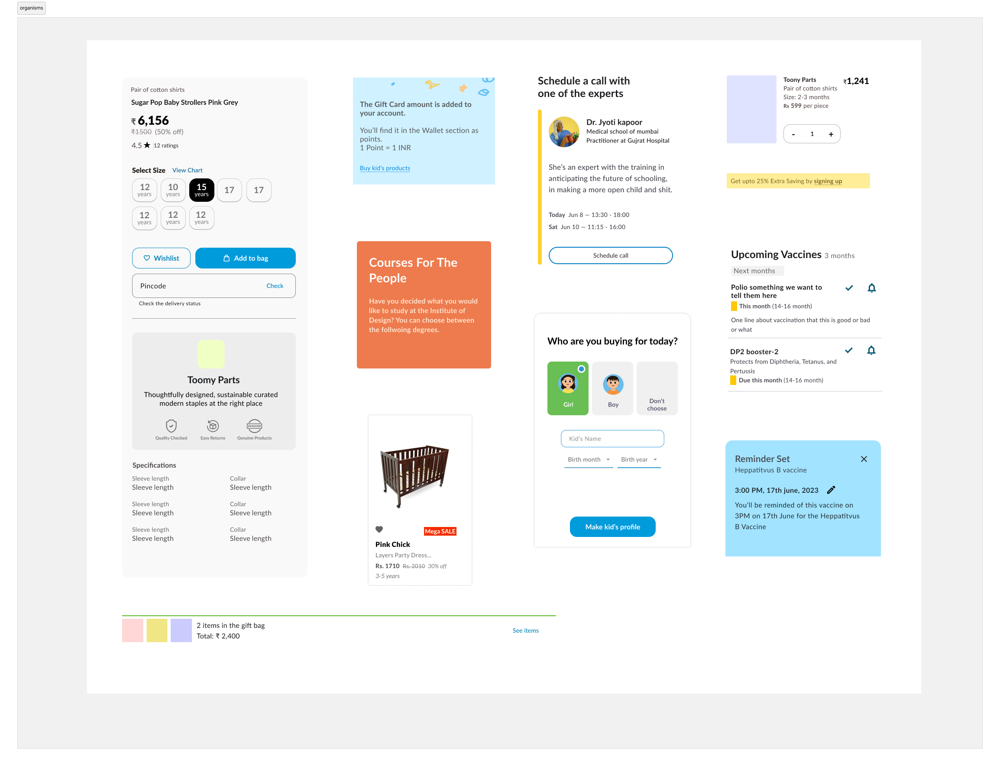
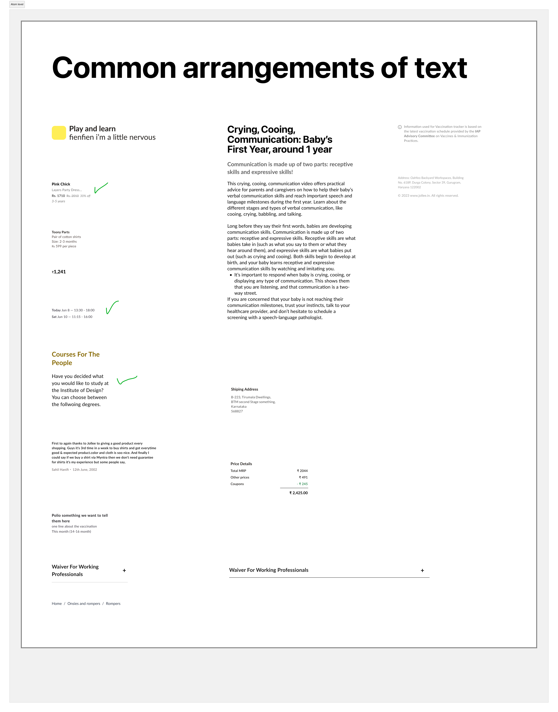
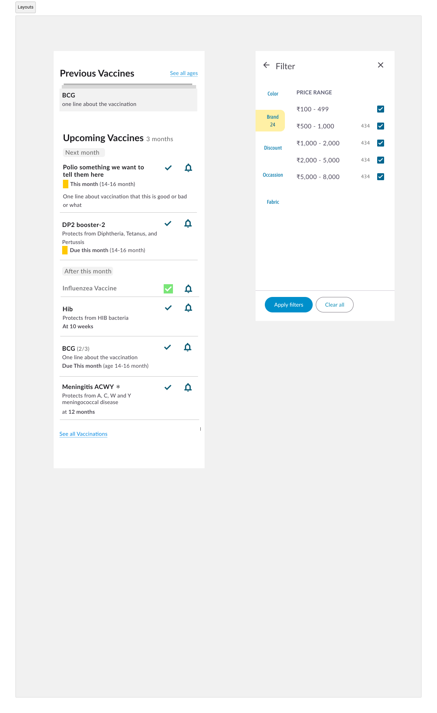
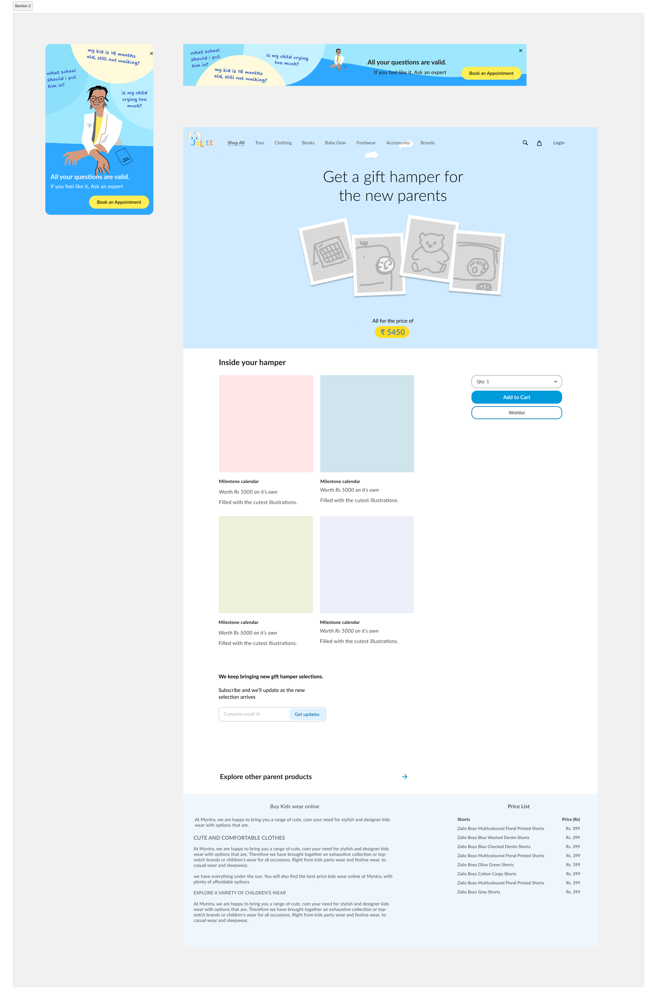
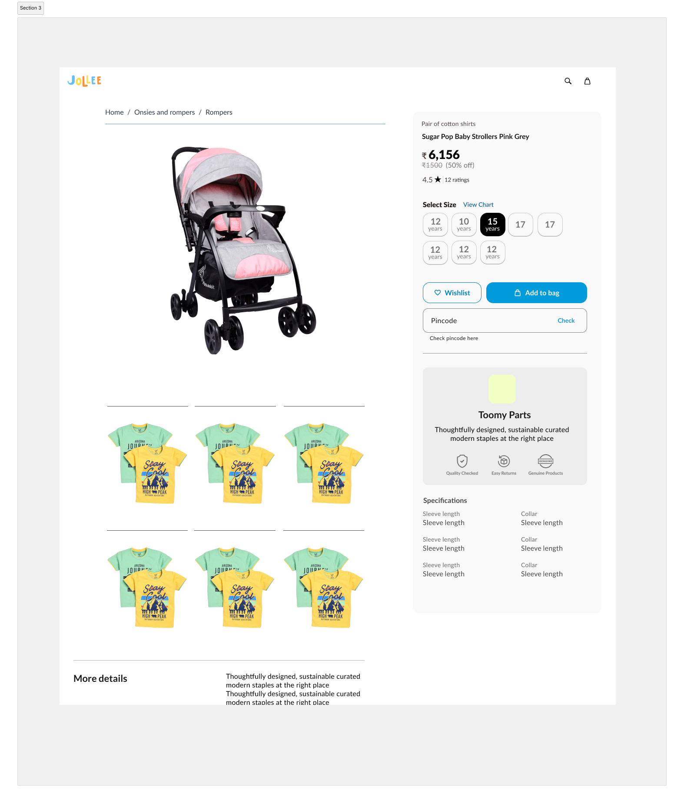
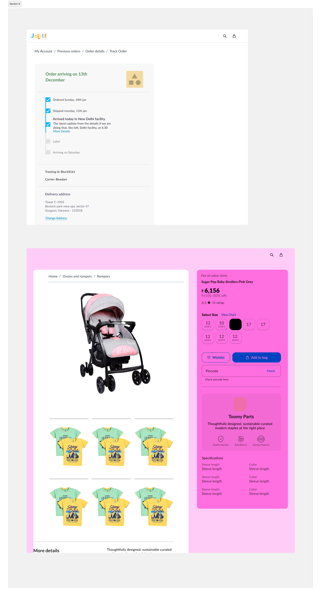

From a design system project, Where I made the designs such that you
can make the most common UIs with it, and make more expressive
things. This was also done for a website for kid's products, so
things were made to look like toys.





